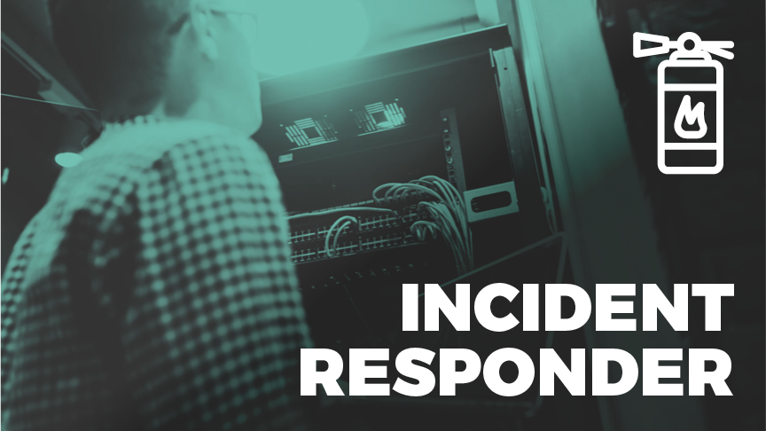
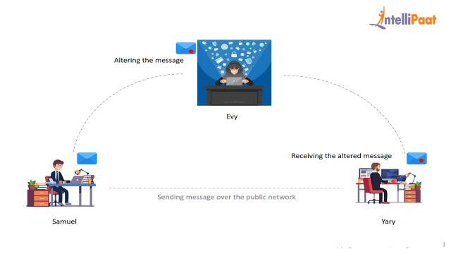

9 Best Entry-Level Cyber Security Jobs in 2022
What is Cybersecurity? What are some of the best entry-level cyber security jobs?

Cybersecurity is a term that refers to all processes, technologies,
and individuals that collectively protect organizations from digital
attacks. Cybersecurity professionals use to install and manage
sophisticated security software and search for vulnerabilities within
an organization’s digital systems and create protocols to safeguard
the companies, consumers, and information from malicious attackers.
Cybersecurity teams constantly strive to secure networks, proprietary
applications, and systems against online threats and will be creating
layers of protection across networks, computers, and sensitive data.
As attackers become ever more innovative, these information security
professionals fall to prevent malicious attackers from accessing,
modifying, or destroying sensitive data.
With so much of daily interactions being committed online, the work
cybersecurity professionals do crucial, especially given the threat
attackers pose to businesses today. Even a single data breach can
result in massive financial loss if malicious attackers choose to
steal or reveal corporate information, customer personal data, bank
information, or other critical business intelligence.
Nine Entry-Level Cybersecurity Jobs
Below, we dig into the top nine of the best entry-level cybersecurity gigs. Each role is selected for its unique blend of job responsibilities, top job prospects, and opportunities for future development.
1. Security Analyst/Manager:
Security analysts play a crucial role in keeping business intelligence
safe from cyberpunk that seeks to edit, view, or destroy data. The
analyst works to identify and correct the flaws in existing security
systems and often works with multiple departments to develop new
processes.
Analysts operate directly with the collected data to find any
suspicious activity in databases, servers, networks, or other
proprietary software. Once a data breach occurs, analysts lead
measures to mitigate the damage and prevent it from future attacks.
A security analyst is considered an entry-level job in cybersecurity. It requires a bachelor’s degree in computer science or any related field. Most companies seek analysts with an experience of one to five years in systems administration.
Analysts are frequently promoted to managers, which takes them to a senior position by helping in directing a team of subordinate analysts on day-to-day security tasks. Most managerial jobs require a minimum of five years of specific experience in security analysis.
2. Security Specialist
Security specialists are assigned to maintain an organization’s automated security systems and employee identification databases.
These professionals are responsible for protecting the company’s data
and ensuring the end-user digital safety, with leadership to develop
guidelines around company policy and network use.
Most security specialist positions require a minimum of five to seven
years of relevant experience as an intermediary role. Industries that
commonly hire security specialists include aerospace, defense
contracting, energy and utilities, financial services, government, and
higher education firms. Security specialists even tend to work in
industries like tech and finance.
Companies often promote security specialists to senior roles, such as team leaders or cross-departmental communicators.
3. Incident Responder
Incident responders are the people who use digital forensics to investigate breaches and other security events.
Everyday responsibilities of the role may include:
- Assessing systems for risk.
- Automation testing.
- Conducting system analysis to identify threats and respond to potential breaches.
This high-pressure role requires a keen eye for detail and the ability to communicate productively across different departments. Incident responders must create comprehensive reports for management and share them with those from non-technical backgrounds.
Most incident responder roles require a minimum of two to three years of experience in the information security or cyber forensics field. Network or system administrator positions are often fed into this position.
Incident responders work in finance, nonprofit, tech, and aerospace sectors.
4. Cryptographer
Cryptographers are one of the most exciting cybersecurity jobs on this list. They are the people who use specialized algorithms and ciphers to encrypt sensitive data to develop secured systems. These professionals’ work is to protect data from being copied, modified, destroyed, or intercepted by any unauthorized use or agents.
Cryptographers typically have a statistical background, as their role requires them to develop mathematical models capable of analyzing emerging security threats. Cryptography positions require a broad theoretical understanding of how cryptographic theories can apply in real-world scenarios to IT systems.
Most of the roles require a bachelor’s degree in mathematics, computer science, computer engineering, or any related field. Alternatively, the position may require a minimum of five and more years of relevant experience in systems administration, auditing, or data encryption.
Cryptographers work in industries spanning from government and technology to finance and health care. Any enterprise that needs to protect its sensitive client and business data may have a use for cryptographers.
5. Security Architect
Security architects help build enterprise-level information systems that meet robust security requirements. Key responsibilities include security planning and testing and designing and implementing new security protocols.
Architects must have a broad mastery of the software and systems that a company employs to secure sensitive data. These professionals should have a comprehensive understanding of network security, hardware configuration, network protocols, and the specific procedures at their company.
As an intermediate role, security architects usually require five to ten years of relevant experience, with at least three years explicitly committed to security. Security architects are frequently promoted to managerial roles in network security because they have a broad-level overview of the systems.
Industries include defense, government, financial companies, and aerospace that employ security architects.
6. Security Auditor
For cybersecurity professionals, this domain can offer incredible growth opportunities. Security auditors perform the essential task of verifying security procedures, maintaining system safety, and compiling reports.
This position requires dedicated 66attention to detail. Auditors strive to find potential vulnerabilities and flaws within internal systems before they become a significant problem. This role requires regular pen-testing, documentation, and communication between departments.
Security auditors are most frequently promoted from within their cybersecurity department and boast over three to five years of security or systems administration experience. This Entry-level position for new computer science graduates also does exist in government and other nonprofit industries.
Auditors proceed to more senior roles in security architecture or management.
7. Forensic Expert
Forensic experts are responsible for recovering data, analyzing network traces, and collecting evidence from diverse computer systems. Forensic experts help conduct investigations concerning the party or parties responsible when devices are physically or digitally damaged.
Forensics specialists are also required to recover information, reconstruct damaged hardware, and ensure that all work is completed in compliance with federal law.
While forensics experts work in the crime investigation industry, some work in private sectors such as healthcare, defense contracting, and tech. In this field, Entry-level positions require a minimum of one to three years of relevant experience in forensics, while senior roles require about five or more.
Forensics experts can be promoted to senior roles leading to regional labs or managing quality assurance guidelines. After receiving an advanced degree, some professionals move on to college teaching roles.
8. Penetration Tester
A penetration tester is responsible for finding any existing security issues within a company’s information infrastructure. Pen testers are also called “ethical hackers” or security consultants. This also makes this one of the more trendy cybersecurity jobs.
Pen testers must perform wireless assessments of the organization’s wifi systems, physical checks of the underlying hardware, some social engineering tests, and phishing assessments for end-users within a company.
Low-level penetration testing roles require a minimum of one to four years of experience in corresponding fields such as systems administrator, network administrator, or network engineer. After getting more specialized qualifications, many pen-testers can also become information technology managers or systems architects.
Industries such as banking, health care, retail — or, practically speaking, any sector that aims to secure client data — can hire pentesters to improve their systems.
9. Source Code Auditor
Source code auditors are the one who works directly with a company’s codebase to identify potential bugs, weaknesses, and syntax errors in the code. Auditors may perform regular penetration tests, review company protocols, and implement fixes that optimize code behavior.
These auditors work closely with development teams and non-technical departments to communicate new findings. An auditor can also be called to work with legal teams or investigate how the leak occurred if any data breach occurs.
These auditors can be contracted for a short duration by the company or may have a more permanent role. Most source code auditors must have an undergraduate degree in information technology or computer science as an entry-level role.
Source code auditors work in virtually every enterprise yet often work with different software companies, SaaS (Software as a Service) companies, many financial institutions, or other online businesses. These professionals are promoted to specialized penetration testing or systems analysis roles.